Working with Data
Why store data outside the code?
You can already hold data in variables, lists, tuples and dictionaries:
student = {
"name": "Rahul",
"marks": 85
}That works while the program runs. But one important question remains: what happens to the data when the program stops?
student_name = "Rahul"
marks = 85
print(student_name)
print(marks)
# Program stops -> student_name and marks are gone
# Next run -> we must enter the data againRahul
85While the program is running, the data is available. But when the program stops:
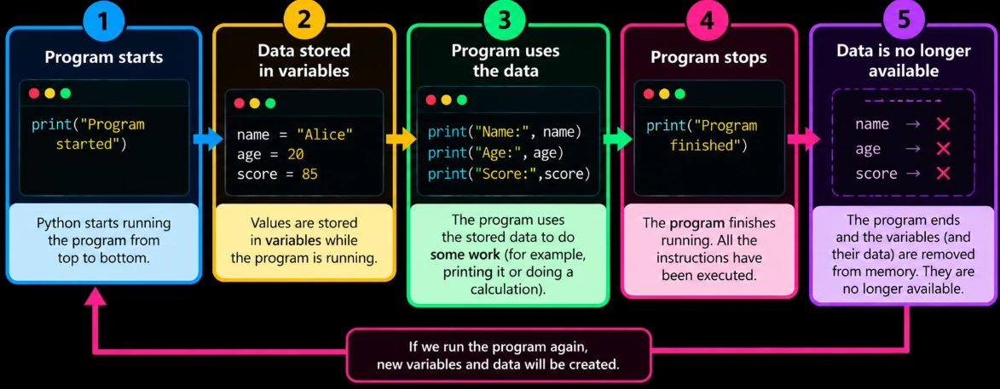
If you start the program again, you would need to enter the data again. That is not practical.
Real programs can’t work this way. A student system must remember every student between runs; a banking app can’t forget your balance the moment it closes. We need to store data outside the program, somewhere that survives after it ends.
with open("student.txt", "w") as file:
file.write("Rahul, 85")After this runs, a file student.txt containing Rahul, 85 sits in your folder, even after the program closes. (You’ll learn exactly how with open() works below.)
str():
balance = 5000
with open("balance.txt", "w") as file:
file.write(str(balance))Persistent data vs temporary data
Data falls into two groups, based on how long it lives.
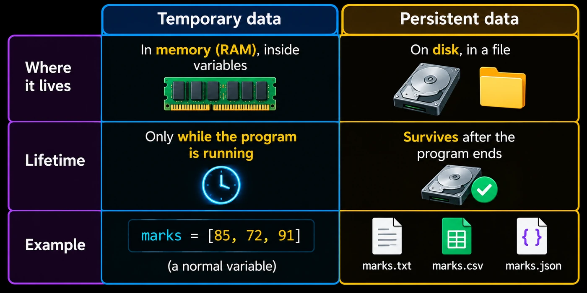
# Temporary data - lives in memory, lost when the program ends
cart = ["Shoes", "Watch"]
# Persistent data - saved on disk, available on the next run
with open("cart.txt", "w") as file:
file.write("Shoes\nWatch\n")Common data file formats
On disk, data isn’t stored as Python lists or dictionaries. It is stored as files in one of several common formats, each suited to a different kind of data.
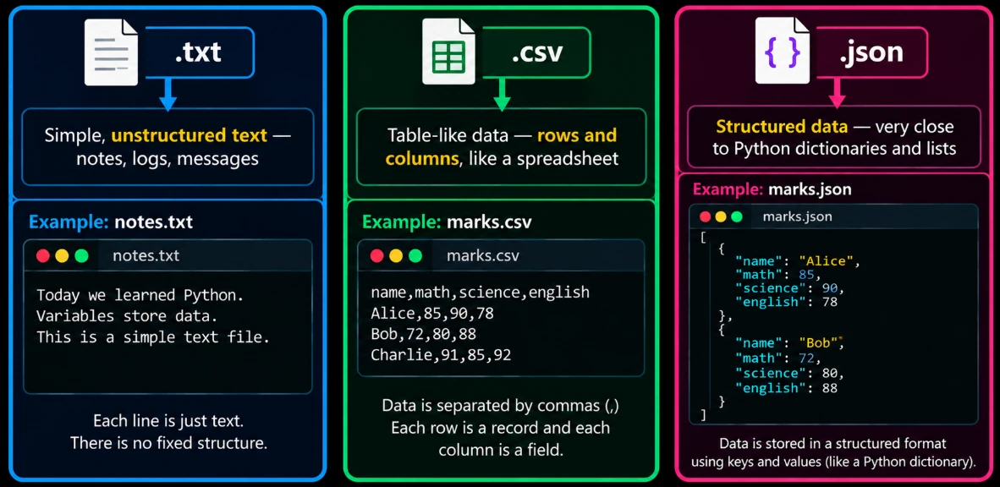
.txt for plain text, .csv for tables, .json for structured data.The same student information in each format:
Rahul, 21, 85
Priya, 22, 90name,age,marks
Rahul,21,85
Priya,22,90[
{"name": "Rahul", "age": 21, "marks": 85},
{"name": "Priya", "age": 22, "marks": 90}
]Choosing the right format
Different formats suit different situations. Here’s the basic decision-making pattern:
.txt when…
the data is simple, free-form text with no rows, columns or nesting. A log file, a saved note, a message history.
.csv when…
the data is a table: the same fields repeated for every record, to open in Excel or Google Sheets. Student lists, sales records, attendance.
.json when…
the data is nested (lists in dicts, dicts in dicts) or shared with other programs, especially web apps. Settings, API data.
App started
User Rahul logged in
User Rahul logged outname,date,status
Rahul,01-07,Present
Priya,01-07,Absent{
"name": "Rahul",
"marks": [85, 90, 78],
"address": {"city": "Bengaluru", "pincode": 560001}
}Opening and reading files
Before you can read or write a file you must open it with the built-in open().
open(filename, mode)file = open("notes.txt", "r")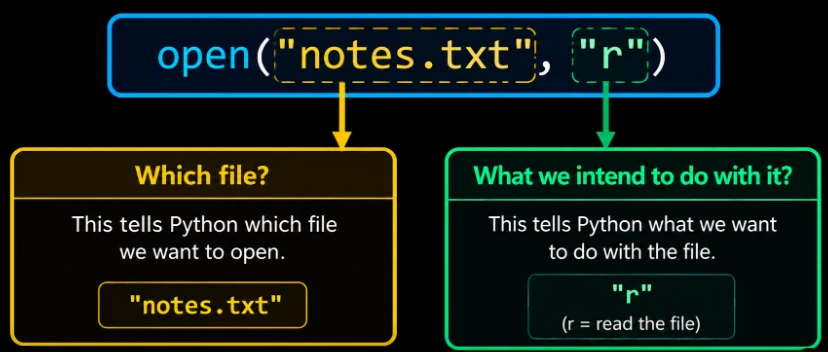
The second argument, the mode, says what you plan to do:
file = open("notes.txt", "r") # read (file must already exist)
file = open("notes.txt", "w") # write (creates a new file, or ERASES an existing one)
file = open("notes.txt", "a") # append (adds to the end, without erasing)For the reading examples, suppose notes.txt contains these 11 lines:
AI is no longer limited to answering questions.
Today, AI can generate realistic images of people who do not exist,
clone voices, create videos, write software, compose music, analyze medical images,
translate languages, and even control computer applications. One of the most interesting developments
is the rise of AI agents. Instead of simply giving an answer, an AI agent can receive a goal, create a plan,
use tools such as browsers or APIs, observe the results, and continue taking actions until the task is completed.
At the same time, AI has some surprising limitations. It can confidently generate information that is completely
wrong, struggle with simple reasoning tasks, and produce different answers to the same question. AI is also changing
how software is built: a person can describe an application in natural language and AI can generate much of the code
needed to create it. The fascinating question is no longer just "Can AI answer our questions?" but "What happens when
AI can actually take actions in the real world?"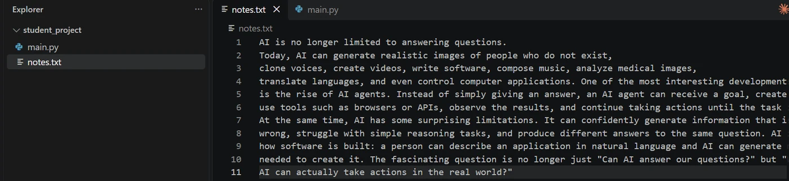
notes.txt in VS Code: 11 lines.Reading the complete file: .read()
.read() reads the entire file at once, as one string.
file = open("notes.txt", "r")
content = file.read()
print(content)
file.close()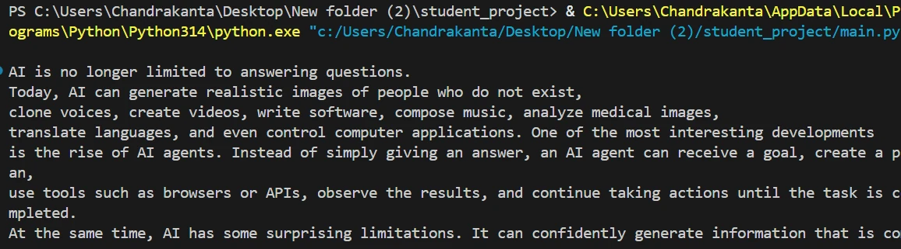
Fine for small files. For very large files, loading everything into memory at once is wasteful, which is where line-by-line reading helps.
Reading line by line
Option 1: loop over the file. A file is iterable, so a for loop works on it just like on a list.
file = open("notes.txt", "r")
for line in file:
print(line)
file.close()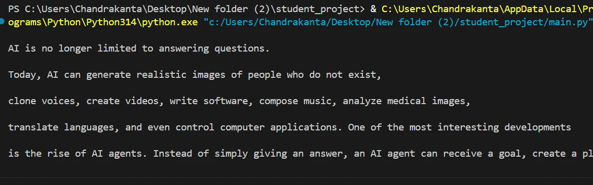
Notice the extra blank lines. Each line already ends with a hidden \n (newline character), and print() adds its own newline on top. Strip it off:
file = open("notes.txt", "r")
for line in file:
print(line.strip())
file.close()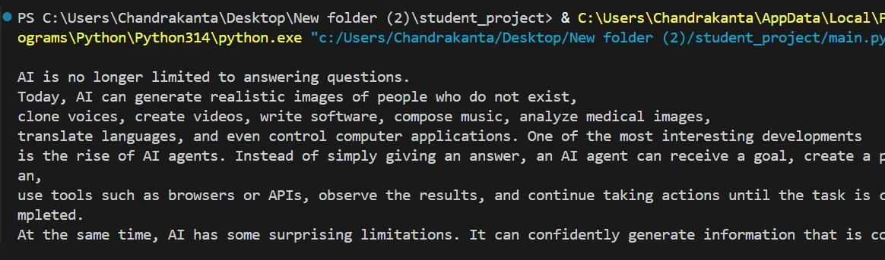
.strip() the extra blank lines are gone.Option 2: .readlines(). Reads the whole file but returns a list, one item per line (each line except the last still ends in \n):
file = open("notes.txt", "r")
lines = file.readlines()
print(lines)
file.close()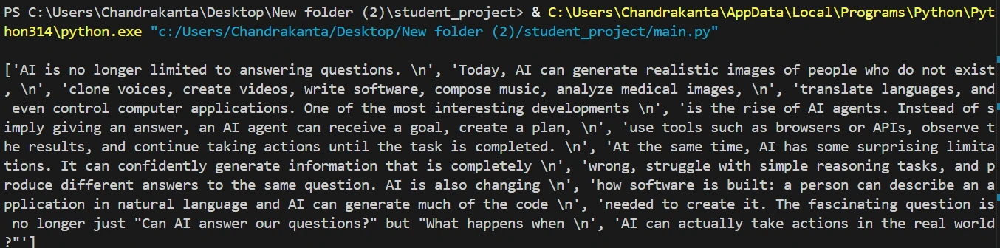
\n at the end of each item is the hidden newline; the last line has none.It’s a plain list, so everything from the Lists section applies:
file = open("notes.txt", "r")
lines = file.readlines()
print(lines[0])
print(len(lines))
file.close()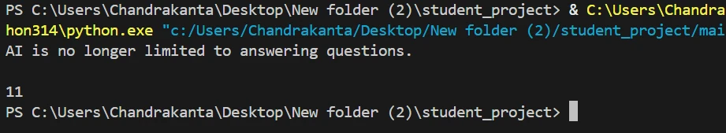
lines[0] is the first line and len(lines) is 11.(The blank line is the \n still attached to lines[0].)
Option 3: .readline(). Reads just one line per call, moving forward each time:
file = open("notes.txt", "r")
print(file.readline())
print(file.readline())
print(file.readline())
file.close()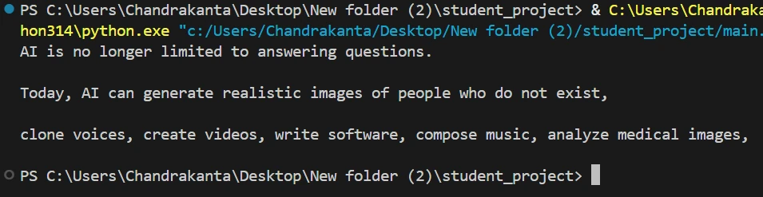
| Method | Gives you |
|---|---|
file.read() | the whole file as one string |
file.readlines() | the whole file as a list of lines |
file.readline() | one line per call |
for line in file: | loops through the file, one line per round (memory-friendly) |
Writing, appending and closing
Writing content to a file
Open in "w" mode, call .write(), then .close():
file = open("students.txt", "w")
file.write("Rahul")
file.close()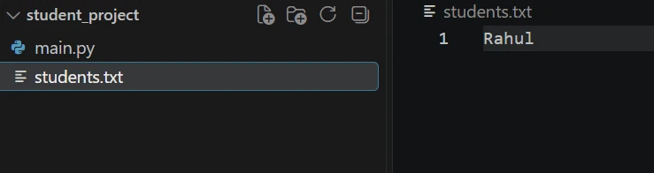
students.txt was created and contains Rahul.Writing multiple lines
.write() does not add a newline for you. Put \n at the end to say “move to the next line”:
file = open("students.txt", "w")
file.write("Rahul\n")
file.write("Priya\n")
file.write("Amit\n")
file.close()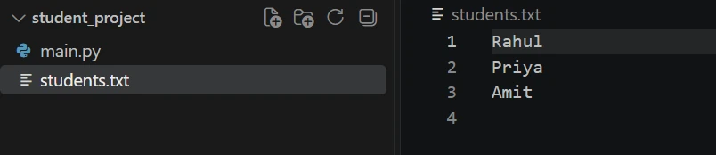
\n tells Python: move to the next line."w" replaces existing content
This is very important. Suppose the file already contains:
Now run:
file = open("students.txt", "w")
file.write("Sneha")
file.close()The previous content is replaced. The file now contains:
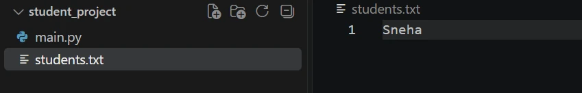
Sneha is left."w" wipes first, asks never. The moment the file is opened in "w" mode it is emptied, even before you write anything. Rahul, Priya and Amit are gone.Appending to a file
To add Sneha without removing Rahul, Priya and Amit, use "a":
file = open("students.txt", "a")
file.write("Sneha\n")
file.close()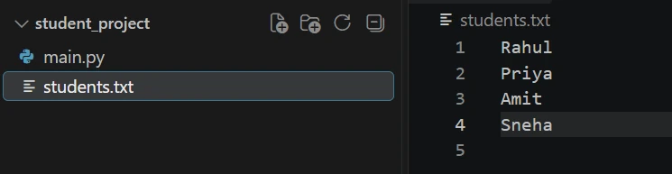
The important difference is:
"w" = start over. "a" = keep and add."a" is the right mode.
message = input("Type a message: ")
file = open("chat_history.txt", "a")
file.write(message + "\n")
file.close()chat_history.txt held “Rahul: Hi Priya!” and “Priya: Hello Rahul, how are you?”, typing Rahul: Doing great! adds it as the third line.Closing a file
When you are done, close the file with file.close(). Why it matters:
- An open file holds a connection reserved by the operating system; many open files waste resources.
- When writing, Python may keep recent data in a temporary buffer instead of saving it immediately.
.close()flushes it to disk. - Other programs (or other parts of yours) may not reliably access a file that is still open.
file = open("students.txt", "w")
file.write("Rahul\n")
file.close() # flushes the data to disk and frees the fileA safer alternative: it’s easy to forget .close(), especially if an error happens first. The with statement closes the file automatically, even if something goes wrong:
with open("output.txt", "w") as file:
file.write("Hello, this closes automatically!")
# file is already closed here - no need to call .close()File modes
Every mode decides two things: what you’re allowed to do (read, write, or both), and what happens if the file already exists or doesn’t exist.
| Mode | Allows | File exists | File missing |
|---|---|---|---|
"r" (default) | read only | reads from the start | ❌ FileNotFoundError |
"w" | write only | ⚠️ erases it first | creates it |
"a" | write at the end | keeps content, adds at end | creates it |
"x" | write, new file only | ❌ FileExistsError | creates it |
Default mode: "r"
Leave out the mode and Python assumes "r". With students.txt holding Rahul, Priya, Amit:
file = open("students.txt") # same as open("students.txt", "r")
content = file.read()
print(content)
file.close()Rahul
Priya
AmitWhat if the file doesn’t exist?
file = open("marks.txt", "r")FileNotFoundError: [Errno 2] No such file or directory: 'marks.txt'"r" can only open a file that already exists. "w" and "a" simply create a missing file:
file = open("marks.txt", "w") # marks.txt didn't exist -> Python creates it
file.close()Exclusive creation: "x"
Want a new file but must never erase an existing one? "w" is risky because it silently replaces everything. Use "x":
file = open("new_students.txt", "x")
file.write("Karan\n")
file.close()new_students.txt didn’t exist, so Python creates it with Karan inside. Now try "x" on a file that does exist:
file = open("students.txt", "x")FileExistsError: [Errno 17] File exists: 'students.txt'Python refuses, and your existing students are safe.
roll_number = input("Enter roll number: ")
file = open(roll_number + ".txt", "x")
file.write("Registered\n")
file.close()101 and 101.txt is created. Enter 101 again and you get FileExistsError instead of losing data.Reading and writing together: the "+" modes
| Mode | Meaning |
|---|---|
"r+" | read and write; file must exist; nothing is erased |
"w+" | write and read; erases the file first |
"a+" | append and read; new content always goes at the end |
Example with "r+" (students.txt holds Rahul, Priya, Amit):
with open("students.txt", "r+") as file:
content = file.read()
print(content)
file.write("Sneha\n") # read() moved the cursor to the endRahul
Priya
AmitRahul
Priya
Amit
SnehaSneha went at the end because .read() moved Python’s position in the file, the cursor, all the way to the end, and .write() continued from there.
"a+" starts at the end
with open("students.txt", "a+") as file:
content = file.read()
print(content) # prints an empty stringOnly an empty line appears. The file isn’t empty; Python is already standing at the end, so there’s nothing left to read. (You could call file.seek(0) to jump back to the start.)
Using with open()
From here on, this is how you’ll open files almost every time.
Why with?
The manual way has two problems: you might forget file.close(), and if an error happens in the middle, the program stops before reaching it.
file = open("students.txt", "r")
content = file.read()
print(content + 5) # TypeError happens here
file.close() # this line never runsTraceback (most recent call last):
File "main.py", line 3, in <module>
print(content + 5) # TypeError happens here
~~~~~~~~^~~
TypeError: can only concatenate str (not "int") to strPython stopped at line 3. file.close() was never reached, so the file was left open. with solves both problems.
with open(filename, mode) as file:
# work with the file heretells Python to manage the file for you
opens the file exactly as before
gives the opened file a name to use inside the block
colon + indentation: everything indented belongs to the block, like an if or for body
Automatic closing
The moment the indented block ends, Python closes the file automatically. Check with file.closed:
with open("students.txt", "r") as file:
print(file.closed) # inside the block
print(file.closed) # after the blockFalse
Truewith guarantees the file is closed when the block ends, whatever happens inside.Reading with with
All the reading methods work the same inside with. Suppose students.txt holds Rahul, Priya, Amit, Sneha.
with open("students.txt", "r") as file:
content = file.read()
print(content) # content is still available after the file is closedRahul
Priya
Amit
Snehaprint(content) is outside the block. The file is closed, but content is an ordinary string now and stays available.
with open("students.txt", "r") as file:
for line in file:
print(line.strip())Rahul
Priya
Amit
Snehawith open("students.txt", "r") as file:
lines = file.readlines()
print(lines)
print(len(lines))['Rahul\n', 'Priya\n', 'Amit\n', 'Sneha\n']
4Writing with with
with open("students.txt", "w") as file:
file.write("Rahul\n")
file.write("Priya\n")
file.write("Amit\n")The file now holds Rahul, Priya, Amit. There’s no file.close() anywhere, yet the data is safely saved, because closing also flushes it to disk.
with works with every mode
Appending with "a":
with open("students.txt", "a") as file:
file.write("Sneha\n")Creating a backup safely with "x": copy the students, but never overwrite an old backup by mistake. Two with blocks, one after another:
with open("students.txt", "r") as file:
content = file.read()
with open("backup.txt", "x") as backup:
backup.write(content) # FileExistsError if backup.txt already existsRahul
Priya
Amit
SnehaReading and updating with "r+": count the students and write the total at the end.
with open("students.txt", "r+") as file:
content = file.read()
count = len(content.splitlines())
file.write("Total: " + str(count) + "\n")Rahul
Priya
Amit
Sneha
Total: 4After .read() the cursor is at the end, so .write() adds the total after the last student.
450, 1200, 300, one per line) and adds the total at the end.
with open("sales.txt", "r+") as file:
lines = file.read().splitlines()
total = sum(int(line) for line in lines)
file.write("Total: " + str(total) + "\n")Total: 1950. (Because the file already ends in \n, we don’t start the write with another \n, which would leave a blank line.)| Line | Does |
|---|---|
with open("f.txt", "r") as file: | read |
with open("f.txt", "w") as file: | write (erases) |
with open("f.txt", "a") as file: | add to the end |
with open("f.txt", "x") as file: | create new only |
with open("f.txt", "r+") as file: | read and write |
JSON files
Why JSON?
Imagine saving this student:
student = {
"name": "Rahul",
"age": 21,
"marks": [85, 90, 78]
}In a .txt file it becomes just text: Rahul, 21, 85, 90, 78. Read it back and you get one string. Which number is the age? Where do the marks start? The structure (keys, list) is lost.
JSON (JavaScript Object Notation) saves dictionaries and lists as they are, so loading gives back the same structure.
Structure kept
Dictionaries stay dictionaries, lists stay lists.
Human-friendly
Easy to read and edit by hand.
The web’s format
Standard for web applications and APIs.
Universal
Almost every programming language reads and writes it.
JSON structure
{
"name": "Rahul",
"age": 21,
"marks": [85, 90, 78],
"passed": true
}- Data is written as key: value pairs.
- Keys must always be strings in double quotes.
- Strings must use double quotes:
'Rahul'is not valid JSON,"Rahul"is. - Items are separated by commas, with no comma after the last item.
Objects and arrays
Object { }
key-value pairs, just like a Python dictionary.
Array [ ]
an ordered list of values, just like a Python list.
They nest, exactly like nested data structures. students.json is an array of objects, each holding an array of marks:
[
{"name": "Rahul", "age": 21, "marks": [85, 90, 78]},
{"name": "Priya", "age": 22, "marks": [90, 88, 95]}
]JSON data types
| JSON | Example | Python |
|---|---|---|
| object | {"a": 1} | dict |
| array | [1, 2] | list |
| string | "Rahul" | str |
| number (integer) | 21 | int |
| number (decimal) | 85.5 | float |
true / false | true | True / False |
null | null | None |
true, false and null are lowercase in JSON; in Python they are True, False, None. The json module converts them automatically.import json
data = json.loads('{"passed": true, "failed": false, "grade": null}')
print(data){'passed': True, 'failed': False, 'grade': None}The json module
Built in: nothing to install, just import json. Four main functions:
| Function | Converts |
|---|---|
json.load(file) | JSON file → Python object |
json.dump(data, file) | Python object → JSON file |
json.loads(text) | JSON string → Python object |
json.dumps(data) | Python object → JSON string |
Reading JSON files: json.load()
import json
with open("students.json", "r") as file:
students = json.load(file)
print(students)
print(type(students))[{'name': 'Rahul', 'age': 21, 'marks': [85, 90, 78]}, {'name': 'Priya', 'age': 22, 'marks': [90, 88, 95]}]
<class 'list'>A real Python list of dictionaries, so all your list and dictionary skills apply:
print(students[0]["name"])
print(students[1]["marks"][2])
for student in students:
print(student["name"], "→", sum(student["marks"]))Rahul
95
Rahul → 253
Priya → 273Writing JSON files: json.dump()
import json
student = {
"name": "Sneha",
"age": 20,
"marks": [82, 91, 87],
"passed": True
}
with open("student.json", "w") as file:
json.dump(student, file){"name": "Sneha", "age": 20, "marks": [82, 91, 87], "passed": true}True became true, and it’s all on one line: valid, but hard to read. Add indent:
with open("student.json", "w") as file:
json.dump(student, file, indent=4){
"name": "Sneha",
"age": 20,
"marks": [
82,
91,
87
],
"passed": true
}indent=4 puts each item on its own line with 4 spaces of indentation.
Updating a JSON file: load → change → dump
You can’t “append” to JSON like a text file (that would break the brackets). Instead:
import json
with open("students.json", "r") as file:
students = json.load(file)
students.append({"name": "Amit", "age": 20, "marks": [70, 75, 80]})
with open("students.json", "w") as file:
json.dump(students, file, indent=4)students.json now holds three student objects (Rahul, Priya and Amit), neatly indented.
import json
with open("settings.json", "r") as file:
settings = json.load(file) # {"theme": "dark", "volume": 40, "language": "Hindi"}
settings["volume"] = 70
with open("settings.json", "w") as file:
json.dump(settings, file, indent=4){
"theme": "dark",
"volume": 70,
"language": "Hindi"
}Converting to and from JSON strings
Sometimes you want JSON text, not a file, for example to send over the internet or print it.
import json
student = {"name": "Rahul", "age": 21, "passed": True, "grade": None}
text = json.dumps(student)
print(text) # True becomes true, None becomes null
print(type(text)){"name": "Rahul", "age": 21, "passed": true, "grade": null}
<class 'str'>import json
text = '{"name": "Priya", "age": 22, "passed": false}'
student = json.loads(text)
print(student) # false becomes False
print(type(student))
print(student["name"]){'name': 'Priya', 'age': 22, 'passed': False}
<class 'dict'>
PriyaCSV files (basics)
CSV means Comma-Separated Values: a plain text file where each line is a record and commas separate the values.
- It stores table-like data: the same fields for every record.
- It opens directly in Excel or Google Sheets.
- It’s small and simple: just plain text.
- Many apps export CSV: attendance sheets, sales reports, bank statements.
date,description,amount
01-07,UPI Payment,-250
02-07,Salary,45000
03-07,ATM Withdrawal,-2000Rows and columns
name,age,marks
Rahul,21,85
Priya,22,90
Amit,20,78| name | age | marks |
|---|---|---|
| Rahul | 21 | 85 |
| Priya | 22 | 90 |
| Amit | 20 | 78 |
- Each line is a row: one record (one student).
- Commas split each row into columns: name, age, marks.
- The first row is usually the header: it names the columns; it isn’t a student.
The csv module
You could split each line with .split(","), but what if a value contains a comma, like “Bengaluru, Karnataka”?
line = 'Rahul,"Bengaluru, Karnataka",85'
print(line.split(",")) # WRONG - the city is split into two['Rahul', '"Bengaluru', ' Karnataka"', '85']The built-in csv module handles quoting correctly (it reads that line as ['Rahul', 'Bengaluru, Karnataka', '85']).
| Tool | Does |
|---|---|
csv.reader(file) | reads rows, each row as a list |
csv.writer(file) | writes lists as rows |
Reading CSV: csv.reader()
import csv
with open("students.csv", "r") as file:
reader = csv.reader(file)
for row in reader:
print(row)['name', 'age', 'marks']
['Rahul', '21', '85']
['Priya', '22', '90']
['Amit', '20', '78']Each row is a list, so use indexing:
import csv
with open("students.csv", "r") as file:
reader = csv.reader(file)
for row in reader:
print(row[0], "-", row[2])name - marks
Rahul - 85
Priya - 90
Amit - 78Every value is a string
CSV is plain text, so you get "85", not 85. Convert with int() before doing maths:
import csv
with open("students.csv", "r") as file:
reader = csv.reader(file)
rows = list(reader)
print(rows[1][2], type(rows[1][2]))
print(int(rows[1][2]) + 5)85 <class 'str'>
90Writing CSV: csv.writer()
Create a writer and give it one row at a time as a list with .writerow():
import csv
with open("new_students.csv", "w", newline="") as file:
writer = csv.writer(file)
writer.writerow(["name", "age", "marks"])
writer.writerow(["Rahul", 21, 85])
writer.writerow(["Priya", 22, 90]) # numbers are converted to text automaticallyname,age,marks
Rahul,21,85
Priya,22,90newline=""? The csv writer adds its own line endings. Without newline="", on Windows you get an extra blank line between every row. Always add it when opening a CSV file for writing or appending.Many rows at once: .writerows()
import csv
students = [
["name", "age", "marks"],
["Rahul", 21, 85],
["Priya", 22, 90],
["Amit", 20, 78]
]
with open("new_students.csv", "w", newline="") as file:
writer = csv.writer(file)
writer.writerows(students)Adding a row with "a"
import csv
with open("students.csv", "a", newline="") as file:
writer = csv.writer(file)
writer.writerow(["Sneha", 20, 88])students.csv now ends with Sneha,20,88; the other rows are untouched.
import csv
name = input("Enter student name: ")
with open("attendance.csv", "a", newline="") as file:
writer = csv.writer(file)
writer.writerow([name, "Present"])Handling the header
In the first reader example, ['name', 'age', 'marks'] printed as if it were a student. Try converting marks on every row and the header breaks the program:
import csv
with open("students.csv", "r") as file:
reader = csv.reader(file)
for row in reader:
print(row[0], int(row[2]))ValueError: invalid literal for int() with base 10: 'marks'The first row’s “marks” is a word, which can’t become a number. next(reader) reads just one row (the header) and moves forward, so the loop starts at real data:
import csv
with open("students.csv", "r") as file:
reader = csv.reader(file)
header = next(reader)
print("Columns:", header)
for row in reader:
print(row[0], "scored", int(row[2]))Columns: ['name', 'age', 'marks']
Rahul scored 85
Priya scored 90
Amit scored 78Putting it together: average marks
import csv
total = 0
count = 0
with open("students.csv", "r") as file:
reader = csv.reader(file)
next(reader) # skip the header
for row in reader:
total = total + int(row[2])
count = count + 1
print("Average marks:", round(total / count, 2))Average marks: 84.33item,quantity,price
Rice,2,60
Oil,1,180
Sugar,3,45import csv
total = 0
with open("sales.csv", "r") as file:
reader = csv.reader(file)
next(reader)
for row in reader:
total = total + int(row[1]) * int(row[2])
print("Total sales: ₹", total)Total sales: ₹ 435| When you are… | Do this with the header |
|---|---|
| reading | header = next(reader) (skip it once) |
| writing | write the header row first |
| appending | never write the header again; it’s already there |
Key terms
- Persistent data
- Data saved on disk (files, databases) that survives after the program ends.
- Temporary data
- Data held in memory (variables, lists, dicts) that disappears when the program stops.
- open()
- The built-in function that opens a file and returns a file object:
open(filename, mode). - File mode
- The second argument to
open()that sets what you can do:"r"read,"w"write (erases),"a"append,"x"create new only, plus"+"variants. - read() / readline() / readlines()
- Read the whole file as one string, one line per call, or all lines as a list.
- write()
- Writes a string to an open file; it doesn’t add a newline, so you add
\nyourself. - close()
- Closes a file, flushing buffered data to disk and releasing the file.
- with open()
- A statement that opens a file for the indented block and closes it automatically when the block ends, even after an error.
- File cursor
- The current position in a file where the next read or write happens;
read()moves it to the end. - JSON
- JavaScript Object Notation: a text format of objects
{}and arrays[]that keeps nested structure; the standard for web APIs. - json.load / json.dump
- Read a JSON file into Python objects, or write Python objects to a JSON file.
- json.loads / json.dumps
- Convert a JSON string into Python objects, or Python objects into a JSON string.
- CSV
- Comma-Separated Values: a plain-text table where each line is a row and commas separate columns.
- csv.reader / csv.writer
- The csv module’s tools that read rows as lists of strings and write lists as rows, handling quoted commas correctly.
- Header row
- The first row of a CSV that names the columns; skip it with
next(reader)when reading.
Self-check
Pick an answer. You’ll see right away whether it’s correct and why.
students.txt holds three names. You run open("students.txt", "w") and write “Sneha”. What is in the file?
- The three names plus Sneha
- Sneha plus the three names
- Only Sneha
- An error, the file exists
"w" erases the file when it opens it. Use "a" to add instead.
Which mode protects an existing file from being overwritten by raising an error?
"x""w""a""r+"
"x" creates a new file only and raises FileExistsError if it already exists.
Why does for line in file: print(line) show blank lines between lines?
- The file has blank lines
- The loop runs twice
print()is called withend=""- Each line already ends with
\nand print adds another
Use line.strip() to remove the trailing newline.
What is the main advantage of with open(...) as file:?
- It reads files faster
- It closes the file automatically, even if an error happens
- It can only read, so it’s safer
- It converts JSON automatically
When the block ends, for any reason, Python closes the file for you.
You want a JSON string from a Python dict to send to an API. Which function?
json.dump()json.load()json.dumps()json.loads()
The “s” means string; “dump” goes Python → JSON.
What does Python’s None become in JSON?
null"None"none0
JSON uses lowercase null; likewise True → true.
csv.reader gives the row ['Rahul', '21', '85']. What is row[2] + 5?
- 90
- '855'
- '85 5'
- A TypeError
Every CSV value is a string, and you can’t add a string and an int. Use int(row[2]) + 5.
Why open a CSV with newline="" when writing?
- To skip the header
- To avoid extra blank lines between rows on Windows
- To make values numbers
- To allow commas inside values
The csv writer adds its own line endings; newline="" stops Python adding a second one.
How do you add a new student to students.json (a list of objects)?
- Open in
"a"and write the new object - Open in
"x"and dump the new object - Load the list, append in Python, dump the whole list back
- Use
csv.writer
Appending raw text would break the JSON brackets; use load → change → dump.
All of it, in one sentence
Variables are temporary and files are persistent: open them with open(name, mode) (preferably inside with), choose the mode carefully ("r" read, "w" erase-and-write, "a" append, "x" create-only), use plain .txt for free text, the json module for nested data and the csv module for tables.
— Vishwa Mohan